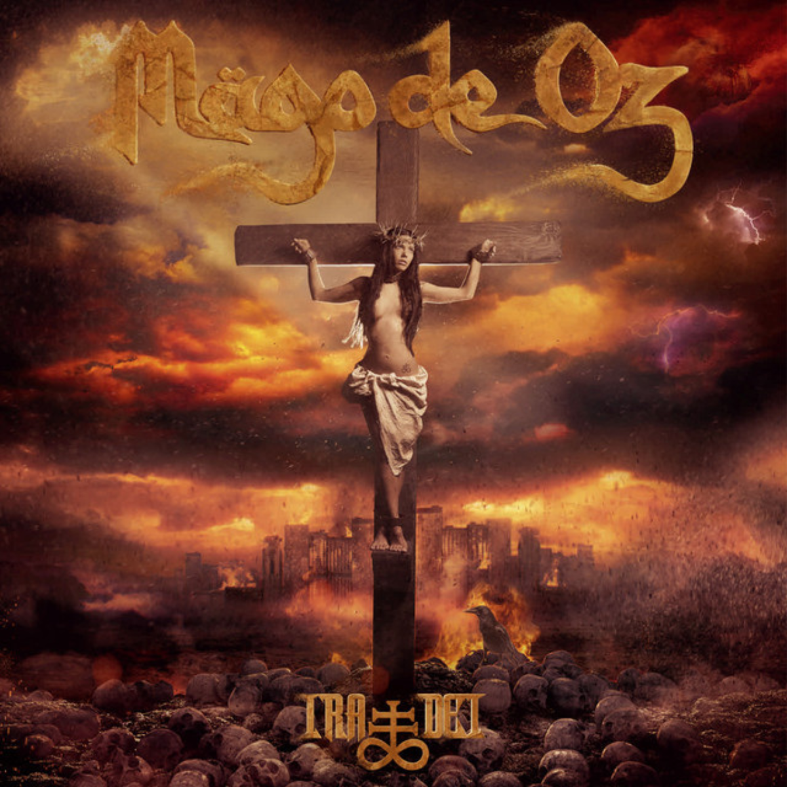

El 08 de marzo salía a la venta el nuevo disco doble de MÄGO DE OZ, llamado “Ira Dei”, una historia apocalíptica donde el personaje principal es una mujer, víctima de un complot para dar vida al hijo de Dios, que resulta que lleva gemelos en sus entrañas. Un concepto muy interesante, que da continuidad a «Jesús de Chamberí» (1996), pero que artísticamente nada tiene que ver con aquel. Producido, grabado y mezclado por Alberto Seara «Flor» en los estudios Cube (Madrid), durante los meses de julio, agosto, septiembre y octubre del pasado 2018, y masterizado por Dave Donnelly en los estudios DNA Mastering (Los Ángeles), podemos decir, así en un primer acercamiento, que el disco sigue la estela de “Ilussia” (2014), en cuanto a composición, letras, sonido, títulos en latín… No cabe duda de que la banda madrileña se encuentra cómoda en esa tesitura y parece que no la va a abandonar, por lo menos de momento.
Ira Dei
